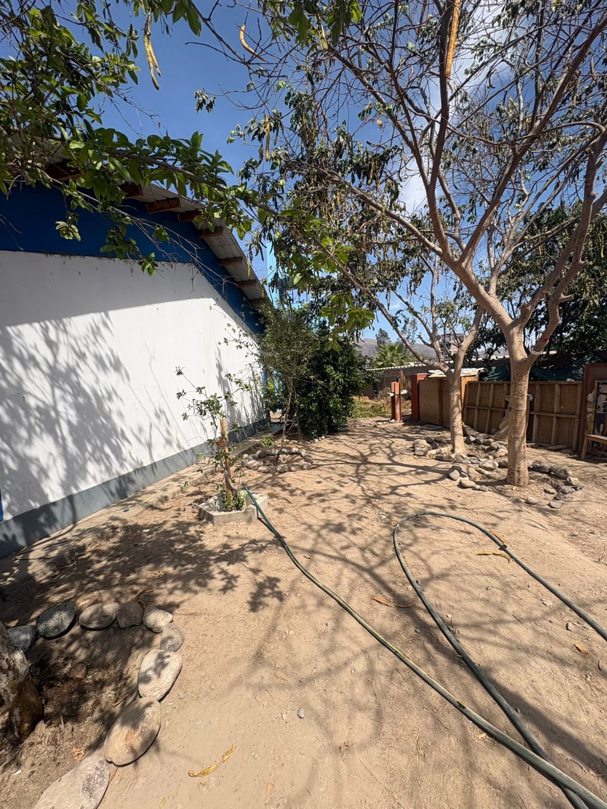

1. Introducción
El presente informe va dirigido a nuestro docente del area de Matemáticas, el cual documenta la transformación de un área crítica en un biohuerto productivo centrado en frutales como el Limón y el Pacae.Se aplicaron cálculos exactos para la distribución de parcelas y recursos.
2. Desarrollo Cronológico Detallado
Semana 1: Saneamiento y Descontaminación

En esta primera semana notamos que habian restos de fierros del taller de soldaduras tanto como residuos entre otros, los cuales nos encargamos de liberar el espacio para poder trabajar
Semana 2: Delimitacion del terreno
En esta segunda semana nos encargamos en recolectar piedras para delimitar nuestras plantas tanto de pacai y limon